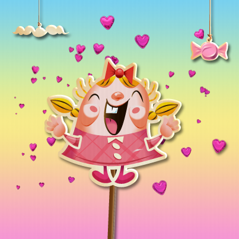
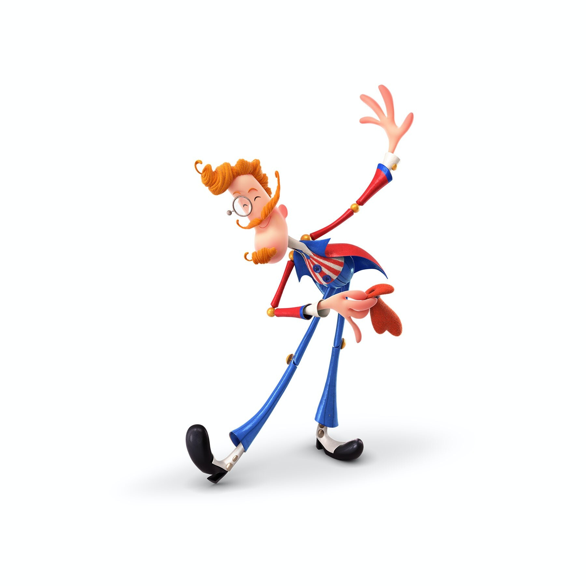
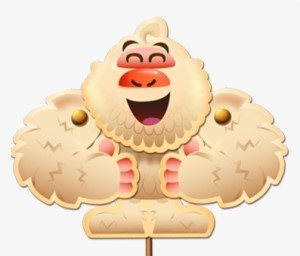
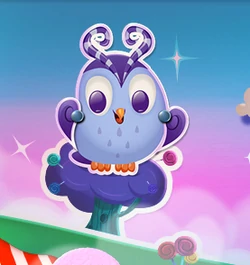
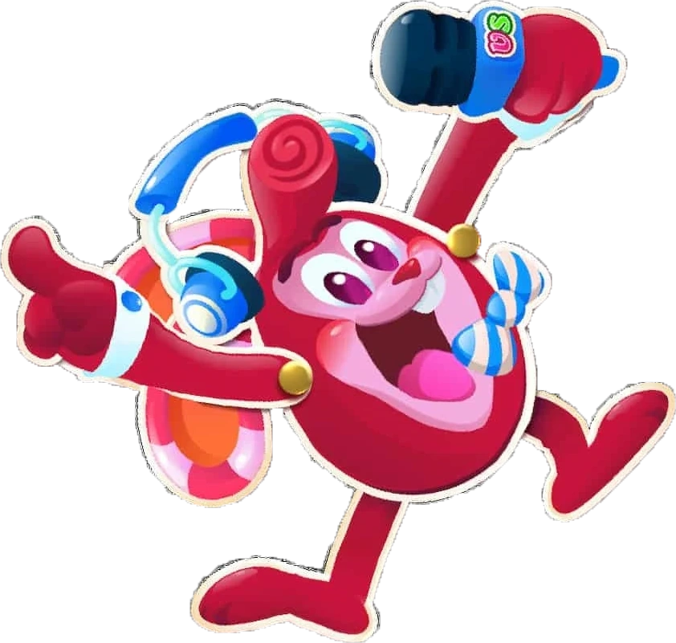
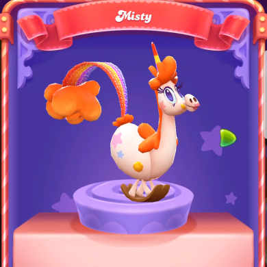
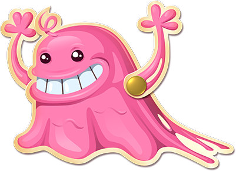

Bem-vindo à página dedicada às personagens do Candy Crush Saga! Se és um jogador apaixonado por este jogo, de certeza que sabes que as personagens são uma parte essencial da experiência. Cada uma delas tem habilidades únicas e personalidades cativantes que tornam cada nível emocionante e desafiador. Nesta página, vais encontrar informações sobre as personagens mais importantes do Candy Crush Saga, incluindo as suas habilidades, a sua história e o nível em que aparecem pela primeira vez. Continua a ler para conhecer estas personagens fascinantes e descobre como elas te podem ajudar a progredir no jogo.
Tiffi é a personagem principal do jogo Candy Crush. Ela é uma menina loira com tranças que usa um vestido rosa. Tiffi é uma personagem doce e alegre que está sempre pronta para ajudar seus amigos. Ela é conhecida por sua coragem e determinação em enfrentar desafios difíceis.
Além de ser a protagonista do jogo, Tiffi também é uma personagem muito inteligente e criativa. Ela está sempre procurando maneiras de ajudar seus amigos e superar os obstáculos do jogo. Tiffi é muito habilidosa em resolver quebra-cabeças e é capaz de pensar rapidamente em soluções criativas para resolver os desafios do jogo.
No jogo Candy Crush, Tiffi é vista como uma líder natural. Ela é muito popular entre os outros personagens e é respeitada por sua sabedoria e coragem. Tiffi é uma personagem inspiradora que incentiva seus amigos a trabalhar juntos para superar qualquer desafio. Ela é uma verdadeira heroína e um exemplo de bondade, coragem e perseverança.
Mr. Toffee é uma personagem importante em Candy Crush Saga. Ele é um homem idoso com uma barba branca e usa um terno marrom. Ele é o guia da personagem principal Tiffi em sua jornada para completar todos os níveis do jogo. Mr. Toffee é conhecido por ser um personagem sábio e sempre está pronto para dar conselhos e orientações para ajudar Tiffi em suas aventuras.
Além disso, Mr. Toffee é o responsável por conduzir o jogador através do mapa do jogo. Cada vez que o jogador completa um conjunto de níveis, Mr. Toffee aparece na tela para dar as parabéns e levá-lo para o próximo conjunto de níveis. Ele também é visto frequentemente em eventos do jogo, como na celebração do aniversário do Candy Crush Saga, onde ele apareceu como um personagem de destaque.
Por fim, Mr. Toffee é um personagem amado pelos jogadores de Candy Crush Saga em todo o mundo. Ele é um personagem icónico que ajuda a dar personalidade ao jogo. Seu senso de humor, sabedoria e orientação tornam o jogo mais interessante e emocionante. O jogador pode sempre contar com Mr. Toffee para guiá-lo através dos níveis e ajudá-lo a completar com sucesso cada fase do jogo.
Yeti é um personagem do jogo Candy Crush que é adorado por muitos jogadores. Ele é um personagem masculino peludo que se destaca por sua força e resistência. Yeti é um personagem amigável que sempre está pronto para ajudar Tiffi e seus amigos em suas aventuras. Além disso, ele tem uma personalidade alegre e divertida que torna as suas interações com os outros personagens ainda mais divertidas.
Com sua força física impressionante, Yeti é um personagem que pode ser muito útil para os jogadores. Ele é capaz de carregar grandes quantidades de doces e ajudar Tiffi em desafios difíceis. Sua capacidade de levantar objetos pesados também pode ser útil em níveis onde o objetivo é remover obstáculos do caminho de Tiffi.
Embora seja forte e resistente, Yeti também tem um lado sensível e carinhoso. Ele é um personagem que valoriza a amizade e sempre está disposto a ajudar os outros personagens. No geral, Yeti é um personagem divertido e alegre que pode fazer a diferença nos jogos de Candy Crush.
Odus é uma personagem icônica do jogo Candy Crush, que é uma coruja mágica com duas cores, branco e azul. Ele é conhecido por ser um personagem desafiador, pois suas habilidades mudam frequentemente, o que torna os níveis em que ele aparece mais difíceis de serem concluídos. Além disso, ele é o guardião da balança do equilíbrio, que é um item importante dentro do jogo.
Odus é muito inteligente e astuto. Ele é capaz de prever o futuro e oferecer conselhos valiosos para Tiffi em suas aventuras. Quando as coisas ficam difíceis, Odus sempre se mostra como um aliado importante para Tiffi, ajudando-a a superar os obstáculos e desafios que ela enfrenta.
Com seu jeito misterioso e enigmático, Odus é um personagem intrigante que adiciona um toque de magia ao universo do Candy Crush. Sua presença no jogo é crucial para manter o equilíbrio entre as diferentes cores dos doces, e sua habilidade de se adaptar a diferentes situações torna-o uma personagem interessante para jogadores que buscam um desafio mais complexo.
Red Rabbit é outra personagem icônica do jogo Candy Crush, que se parece com um coelho vermelho. Ele é um personagem masculino com habilidades muito úteis que ajudam Tiffi em sua jornada pelo mundo doce. Red Rabbit é um personagem muito inteligente, com grande conhecimento sobre a fabricação de doces, o que o torna um grande aliado para Tiffi.
Red Rabbit é visto pela primeira vez em Candy Town, onde ajuda Tiffi a preparar um doce especial para um concurso. Ele é um personagem muito paciente e atencioso, que se preocupa muito com seus amigos. Red Rabbit é um personagem muito leal, que sempre está disposto a ajudar Tiffi em seus desafios.
Red Rabbit tem habilidades especiais no jogo, como a capacidade de transformar doces de uma cor em outra. Essa habilidade é muito útil quando Tiffi precisa de um doce específico para completar um nível. Red Rabbit também pode criar doces especiais, que ajudam Tiffi a alcançar seus objetivos. Sua inteligência e habilidades únicas o tornam uma personagem valiosa no mundo doce de Candy Crush.
Misty é uma personagem feminina no jogo Candy Crush que possui cabelos roxos e olhos azuis brilhantes. Ela é conhecida por ser uma personagem mágica que ajuda Tiffi em sua jornada. Misty é muito habilidosa em transformar doces em peixes, o que pode ser extremamente útil para completar os níveis mais rapidamente.
Misty é uma personagem muito animada e enérgica, que está sempre pronta para ajudar seus amigos. Ela é muito inteligente e astuta, e muitas vezes ajuda Tiffi a pensar fora da caixa para resolver problemas. Misty é um dos personagens mais populares do jogo Candy Crush e é adorada por muitos jogadores por sua personalidade cativante e habilidades mágicas.
No jogo, Misty é muitas vezes vista usando um vestido rosa e um chapéu que combina com seus cabelos roxos. Ela é uma personagem muito carismática e engraçada que adiciona uma dose extra de diversão ao jogo. Se você estiver jogando Candy Crush e encontrar Misty, tenha certeza de que ela fará de tudo para ajudá-lo a completar o nível com sucesso.
Bubblegum Troll é uma personagem engraçada do jogo Candy Crush que é conhecida por suas características divertidas e inusitadas. Ele é um monstro rosa que usa um chapéu e tem uma personalidade peculiar. Bubblegum Troll é muito brincalhão e pode ser um desafio para os jogadores do Candy Crush, pois ele costuma aparecer em níveis difíceis.
Além de ser um personagem engraçado, Bubblegum Troll também é conhecido por suas habilidades mágicas. Ele tem a capacidade de transformar doces em geléias, o que pode ser uma grande ajuda para completar níveis difíceis. No entanto, ele também pode ser um obstáculo em alguns níveis, pois ele pode bloquear o caminho para os jogadores.
Apesar de sua aparência estranha, Bubblegum Troll é um personagem amigável e sempre está disposto a ajudar. Ele é um personagem importante na história do Candy Crush e é amado por muitos jogadores. Se você é um fã de Candy Crush, provavelmente já se deparou com Bubblegum Troll em algum momento e pode apreciar sua personalidade divertida e única.

Clique na imagem para saber mais
Clique na imagem para saber mais
Clique na imagem para saber mais
Clique na imagem para saber mais
Clique na imagem para saber mais
Clique na imagem para saber mais
Clique na imagem para saber mais